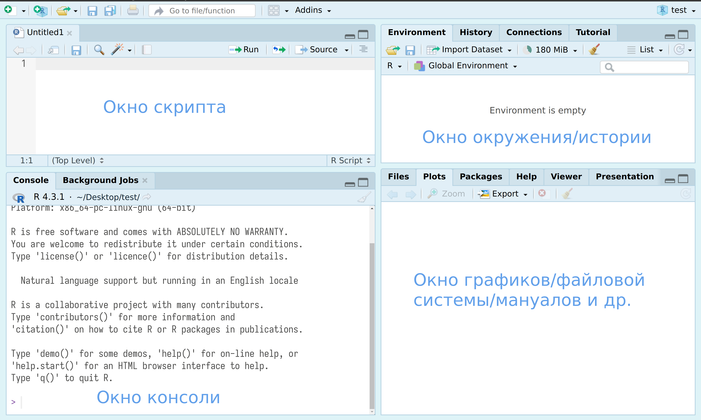
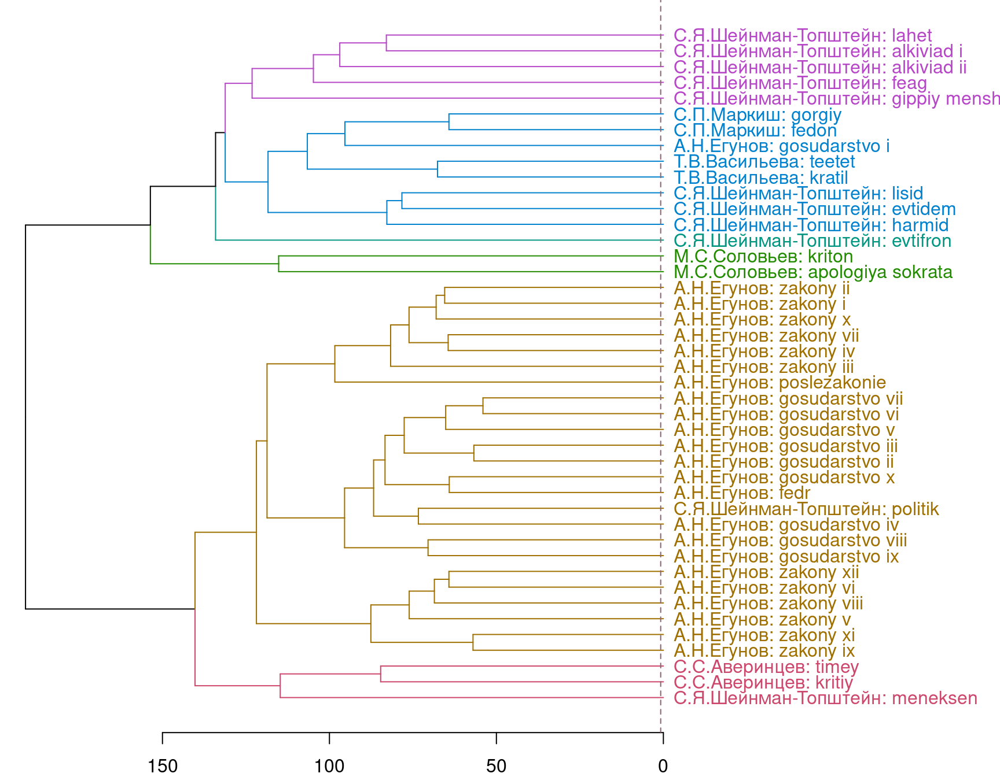
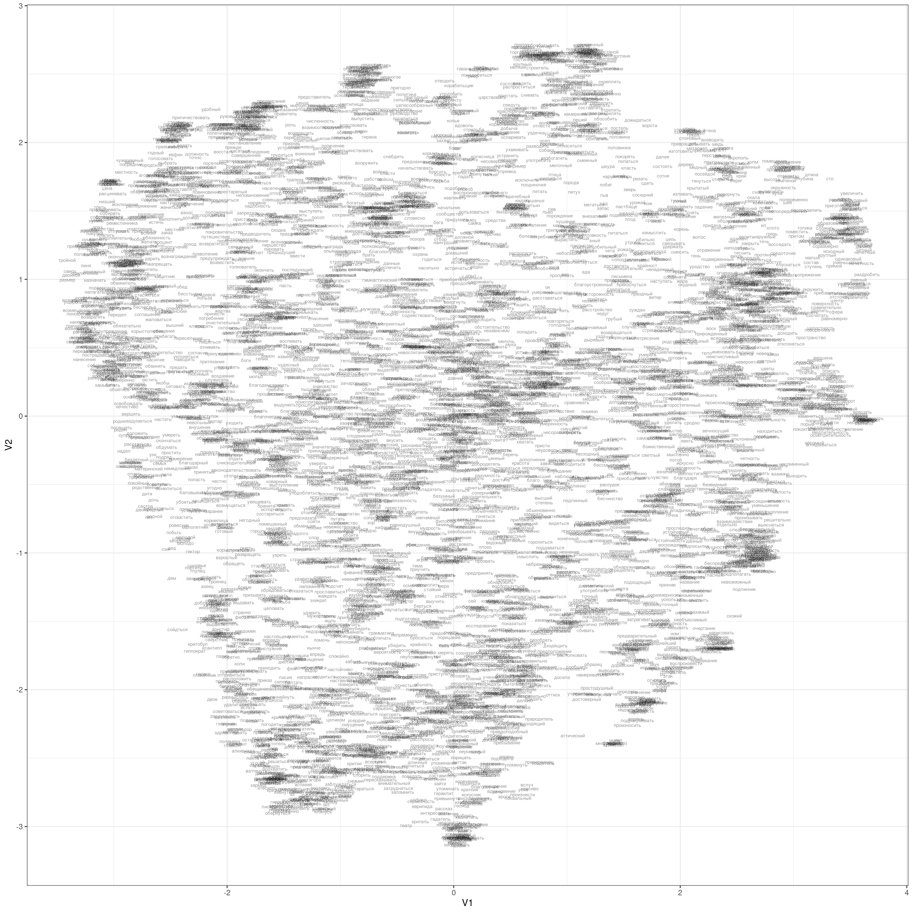

sudo apt-get install r-cran-baseИнструменты для анализа текста в R
летняя школа “Душа и процессор”
Аннотация
Язык программирования R дает исследователю полный набор инструментов для анализа текста. На занятии мы познакомимся с некоторыми из них, такими как анализ частотности, векторизация и кластеризация. Кроме того, обсудим, какие научные задачи могут решаться при помощи этих методов в историко-философских и историко-культурных исследованиях. Опыт программирования не требуется.
1 Введение в R
1.1 Установка R и RStudio
Мы будем использовать R (R Core Team 2023), так что для занятий понадобятся:
- R
- на Windows
- на Mac
- на Linux, также можно установить из командной строки:
- RStudio — IDE для R (можно скачать здесь)
Часто можно увидеть или услышать, что R — язык программирования для “статистической обработки данных”. Изначально это, конечно, было правдой, но уже давно R — это полноценный язык программирования, который при помощи своих пакетов позволяет решать огромный спектр задач. Мы будем использовать следующую версию R:
R version 4.4.0 (2024-04-24)Некоторые люди не любят устанавливать лишние программы себе на компьютер, несколько вариантов есть и для них:
- RStudio cloud — полная функциональность RStudio с некоторыми ограничениями;
- webR REPL — ограниченная версия компилятора R, которая работает в вашем браузере и не требует никаких установок на компьютер
- Jupyter ноутбуки;
- Google Colab (нужно в настройках переключить ядро);
- VS Code — другое IDE, которое также позволяет работать с R;
- в принципе, в IDE нет нужды, можно работать из терминала, после установки, нужно всего лишь набрать
R.
1.2 Знакомство с RStudio
RStudio — основной IDE для R. После установки R и RStudio можно открыть RStudio и перед вами предстанет что-то похожее на изображение ниже:
 После нажатия на двойное окошко чуть левее надписи Environment откроется окно скрипта.
После нажатия на двойное окошко чуть левее надписи Environment откроется окно скрипта.

Все следующие команды можно
- вводить в окне консоли, и тогда для исполнения следует нажимать клавишу
Enter. - вводить в окне скрипта, и тогда для исполнения следует нажимать клавиши
Ctrl/Cmd + Enterили на команду Run на панели окна скрипта. Все, что введено в окне скрипта можно редактировать как в любом текстовом редакторе, в том числе сохранятьCtrl/Cmd + S.
1.3 R как калькулятор
Давайте начнем с самого простого и попробуем использовать R как простой калькулятор. +, -, *, /, ^ (степень), () и т. д.
40+2[1] 423-2[1] 15*6[1] 3099/9[1] 112+4*2[1] 10(2+4)*2[1] 122^3[1] 81.4 Создание переменных
x <- "гнев, богиня, воспой"
y <- sqrt(2)1.5 Пайпы (конвееры)
В нашем коде мы часто будем использовать знаки конвеера (или пайпы): |>. Они призваны показывать последовательность действий.
mean(sqrt(abs(sin(1:100))))[1] 0.76542641:100 |>
sin() |>
abs() |>
sqrt() |>
mean()[1] 0.7654264Чаще всего можно останавливать посередине и смотреть, что на каком этапе трансформации данных получилось.
1.6 Работа с пакетами
Все богатство R находиться в его огромной инфраструктуре пакетов, которые может разрабатывать кто угодно. Для сегодняшнего занятия нам понадобиться следующие пакеты: tidyverse, tidytext, stopwords, broom, word2vec, uwot. Чтобы их установить нужно использовать команду
install.packages(c("tidyverse", "tidytext", "stopwords", "broom", "word2vec", "uwot"))Помните, что если вы установили пакет, это не значит, что функции пакета вам доступны. Пакет еще нужно включить

Проверим, что все установилось, запустим пакет.
library(tidyverse)1.7 Чтение текстовых файлов
В пакете readr (входит в tidyverse) для чтения текста есть функция read_lines(). В качестве первой переменной может выступать путь к файлу на компьютере или интернет ссылка:
ion <- read_lines("https://raw.githubusercontent.com/agricolamz/2024.06.02_text_analysis/main/data/plato_w/ion.txt")
head(ion, 20)[1] "Иону привет! Откуда ты теперь к нам? Из дому, из Эфеса , что ли? Совсем нет, Сократ, из Эпидавра , с празднеств Асклепия. Разве эпидаврийцы устраивают в честь этого бога и состязания рапсодов? Как же! Да и в других мусических искусствах там состязаются. Что же, и мы выступали на состязании? И как ты выступил? Мы получили первую награду, Сократ. Вот это хорошо! Смотри же, чтобы мы победили и на Панафинеях ! Так и будет, если бог захочет. Да, Ион, часто я завидовал вашему искусству... Оно всегда требует, чтобы вы выглядели как можно красивее и были в нарядном уборе, вместе с тем вам необходимо заниматься многими отличными поэтами, и прежде всех – Гомером, самым лучшим и божественным из поэтов, и постигать его замысел, а не только заучивать стихи. Как вам не позавидовать! Ведь нельзя стать хорошим рапсодом, не вникая в то, что говорит поэт; рапсод должен стать для слушателей истолкователем замысла поэта, а справиться с этим тому, кто не знает, что говорит поэт, невозможно. Тут есть чему позавидовать! Ты прав, Сократ. Для меня это и было самым трудным в моем искусстве; все же, мне думается, я объясняю Гомера лучше всех, так что ни Метродор Лампсакский, ни Стесимброт Фасосский, ни Главкон , ни другой кто из живших когда-либо не был в состоянии высказать о Гомере гак много верных мыслей, как я. Это хорошо. Ион; ты, верно, не откажешься сообщить их мне. Да, Сократ, действительно стоит послушать, в какой прекрасный убор я одеваю Гомера: по-моему, я достоин того, чтобы гомериды увенчали меня золотым венком. Я непременно выберу время, чтобы послушать тебя. А сейчас скажи мне вот что: только ли в Гомере ты силен или также и в Гесиоде и Архилохе ? Нет, только в Гомере; мне кажется, и этого достаточно. А есть ли что-нибудь такое, о чем и Гомер и Гесиод оба говорят одно и то же? Я думаю, есть, и даже многое. И то, что об этом говорит Гомер, ты лучше истолковал бы, чем то, что говорит Гесиод? Если они говорят одно и то же, то и я, Сократ, истолковал бы это одинаково. А то, о чем они говорят по-разному? Например, о прорицании говорят ли что-нибудь и Гомер и Гесиод? Конечно. Так что же? Кто истолковал бы лучше сходство и различие в том, что оба поэта говорили о прорицании – ты или кто-нибудь из хороших прорицателей? Кто-нибудь из прорицателей. А если бы ты был прорицателем, разве ты не мог бы толковать и то, что сказано ими по-разному, раз уж ты умеешь истолковывать сказанное одинаково? Ясно, что так. Как же это ты силен в том, что касается Гомера, а в том, что касается Гесиода и остальных поэтов, не силен? Разве Гомер говорит не о том же, о чем все остальные поэты? Разве он не рассказывает большею частью о войне и отношениях людей, хороших и плохих, простых и умудренных в чем-нибудь; о богах, как они общаются друг с другом и с людьми; о том, что творится на небе и в Аиде, и о происхождении богов и героев? Не это ли составляет предмет поэзии Гомера? Ты прав, Сократ. А что ж остальные поэты? Разве они говорят не о том же самом? Да, Сократ, но их творчество не такое, как у Гомера. Что же? Хуже? Да, гораздо хуже. А Гомер лучше? Конечно, лучше, клянусь Зевсом. Не правда ли, милый Ион, когда, например, о числе станут говорить многие, а один будет говорить лучше всех, то ведь кто-нибудь отличит хорошо говорящего? Я полагаю. Будет ли это тот же самый, кто отличит и говорящих плохо, или другой человек? Конечно, тот же самый. Не тот ли это, кто владеет искусством арифметики? Да. А если многие станут обсуждать, какая пища полезна, и кто-нибудь из них будет говорить получше, то отличить говорящего лучше всех может один человек, а говорящего хуже всех – другой, или один и тот же человек отличит обоих? Конечно, один и тот же; это ясно. Кто же он? Как его назвать? Это врач. Итак, скажем вообще: если многие говорят об одном и том же, то всегда один и тот же человек отличит, кто говорит хорошо, а кто плохо; а тот, кто не отличит говорящего плохо, не отличит, ясное дело, и говорящего хорошо, раз они говорят об одном и том же. Да, это так. Значит, один и тот же человек способен судить о них обоих? Да. Ты говоришь, что и Гомер, и остальные поэты, в том числе и Гесиод и Архилох, говорят хотя и об одном, но не одинаково: Гомер хорошо, а те хуже. Да, и я прав. Но если ты отличаешь говорящих хорошо, то отличил бы и говорящих хуже, то есть мог бы узнать, что они хуже говорят. Само собой разумеется. Значит, дорогой мой, мы не ошибемся, если скажем, что Ион одинаково силен и в Гомере, и в остальных поэтах, раз он сам соглашается, что один и тот же человек может быть хорошим судьей всех, кто говорит об одном и том же; а ведь чуть ли не все поэты воспевают одно и то же. В чем же причина, Сократ, что когда кто-нибудь говорит о другом поэте, я не обращаю внимания и не в силах добавить ничего стоящего, а попросту дремлю, между тем, лишь только кто упомянет о Гомере, я тотчас просыпаюсь, становлюсь внимателен и нисколько не затрудняюсь, что сказать? Об этом нетрудно догадаться, друг мой. Всякому ясно, что не благодаря выучке и знаниям ты способен говорить о Гомере; если бы ты мог делать это благодаря выучке, то мог бы говорить и обо всех остальных поэтах: ведь поэтическое искусство есть нечто цельное . Не так ли? Да. А если взять любое другое искусство в его целом, то разве не один и тот же способ рассмотрения применим и ко всем искусствам? Хочешь послушать, как я это понимаю, Ион? Очень хочу, Сократ, клянусь Зевсом; мне приятно слушать вас, мудрецов. Хотелось бы мне, Ион, чтобы ты был прав; но мудрецы-то скорее вы, рапсоды, актеры и те, чьи творения вы поете, а я всего только говорю правду, как и следует заурядному человеку. Посмотри, о каком пустяке я теперь спросил тебя: всякий может легко и просто понять мои слова, что рассмотрение останется тем же, если взять искусство в целом. В самом деле, разберем последовательно. Существует ли, например, искусство живописи как целое? Да. И много было и есть художников, хороших и плохих? Совершенно верно. Так вот, видал ли ты кого-нибудь, кто способен объяснить, чтó в живописи Полигнота , сына Аглаофонта, хорошо, а чтó нет, а когда дело коснется других художников – бессилен, и когда кто-нибудь говорит о произведениях всех прочих художников, то он дремлет, затрудняется и не может ничего объяснить; а когда нужно высказать мнение о Полигноте или об ином, но только одном каком-нибудь художнике, он вдруг просыпается, становится внимателен и нисколько не затрудняется, что сказать? Нет, клянусь Зевсом, я не видал такого человека. Ну, а если речь идет о ваянии, видал ли ты кого-нибудь, кто способен разобрать достоинства творчества Дедала, сына Метиона, или Эпея, сына Панопея, или Феодора Самосца , или одного кого-нибудь из прочих ваятелей, а произведения других ваятелей ему недоступны, и он дремлет, не зная, что сказать? Нет, клянусь Зевсом, я не видывал такого. И наверное, думаю я, когда дело идет об игре на флейте, либо на кифаре, или о пении под кифару, или об искусстве рапсодов, ты никогда не видал человека, который способен говорить об Олимпе, о Фамире, об Орфее или о Фемии, итакийском рапсоде , а слушая Иона эфесца, становится в тупик и не может сообразить, что в его пении хорошо, а что нет. Мне нечего возразить на это, Сократ. Я только уверен, что о Гомере я говорю лучше всех и при этом бываю находчив; и все другие подтверждают, что о Гомере я хорошо говорю, а об остальных нет. Вот и пойми, в чем тут дело. Понимаю, Ион, и сейчас объясню тебе, что это, по-моему, значит. Твоя способность хорошо говорить о Гомере – это, как я только что сказал, не уменье, а божественная сила, которая тобою движет, как в том камне, который Эврипид назвал магнесийским, а большинство называет гераклейским . Этот камень не только притягивает железные кольца, но и сообщает им такую силу, что они, в свою очередь, могут делать то же самое, что и камень, то есть притягивать другие кольца, так что иногда получается очень длинная цепь из кусочков железа и колец, висящих одно за другим; у них у всех сила зависит от того камня. Так и Муза сама делает вдохновенными одних, а от этих тянется цепь других восторженных. Все хорошие эпические поэты не благодаря уменью слагают свои прекрасные поэмы, а только когда становятся вдохновенными и одержимыми; точно так и хорошие мелические поэты; как корибанты пляшут в исступлении, так и они в исступлении творят эти свои прекрасные песнопения; когда ими овладеет гармония и ритм, они становятся вакхантами и одержимыми: вакханки в минуту одержимости черпают из рек мед и молоко, а в здравом уме – не черпают , и то же бывает с душою мелических поэтов, как они сами свидетельствуют. Говорят же нам поэты, что они летают, как пчелы, и приносят нам свои песни, собранные у медоносных источников в садах и рощах Муз . И они говорят правду: поэт – это существо легкое, крылатое и священное ; он может творить не ранее, чем сделается вдохновенным и исступленным и не будет в нем более рассудка; а пока у человека есть это достояние, никто не способен творить и вещать. Поэты, творя, говорят много прекрасного о различных предметах, как ты о Гомере, не от умения, а по божественному наитию, и каждый может хорошо творить только то, на что его подвигнула Муза, – один – дифирамбы, другой – энкомии, третий – ипорхемы, этот – эпические поэмы, тот – ямбы ; во всем же прочем каждый из них слаб. Ведь не от уменья они Это говорят, а от божественной силы: если бы они благодаря уменью могли хорошо говорить об одном, то могли бы говорить и обо всем прочем; потому-то бог и отнимает у них рассудок и делает их своими слугами, вещателями и божественными прорицателями, чтобы мы, слушатели, знали, что это не они, у кого и рассудка-то нет, говорят такие ценные вещи, а говорит сам бог и через них подает нам голос. Лучшее подтверждение этому взгляду – Тинних халкидец, который ни разу не создал ничего достойного упоминания, кроме того пэана , который все поют, – это, пожалуй, прекраснейшее из всех песнопений; то была просто какая-то \"находка Муз\", как выражается и сам Тинних. Тут, по-моему, бог яснее ясного показал нам все, чтобы мы не сомневались, что не человеческие эти прекрасные творения и не людям они принадлежат, но что они – божественны и принадлежат богам, поэты же – не что иное, как передатчики богов, одержимые каждый тем богом, который им овладеет. Чтобы доказать это, бог нарочно пропел прекраснейшую песнь устами слабейшего поэта. Разве я, по-твоему, не прав, Ион? По-моему, ты прав, клянусь Зевсом; твои речи захватывают мою душу, Сократ, и мне кажется, что хорошие поэты под божественным наитием передают нам это от богов. А вы, рапсоды, в свою очередь передаете творения поэтов? И в этом ты прав. Стало быть, вы оказываетесь передатчиками передатчиков? Совершенно верно. Скажи мне вот что, Ион, не скрывай от меня того, о чем я тебя спрошу. Всякий раз как тебе удается исполнение эпоса и ты особенно поражаешь зрителей, когда поешь, как Одиссей вскакивает на порог, открываясь женихам, и высыпает себе под ноги стрелы, или как Ахилл ринулся на Гектора , или что-нибудь жалостное об Андромахе, о Гекабе или о Приаме, – в уме ли ты тогда или вне себя, так что твоей душе, в порыве вдохновения, кажется, что она тоже там, где совершаются события, о которых ты говоришь, – на Итаке , в Трое или где бы то ни было? Как наглядно подтвердил ты свои слова, Сократ! Отвечу тебе, не таясь. Когда я исполняю что-нибудь жалостное, у меня глаза полны слез, а когда страшное и грозное – волосы становятся дыбом от страха и сердце сильно бьется. Что же, Ион? Скажем ли мы, что находится в Здравом рассудке тот человек, который, нарядившись в расцвеченные одежды и надев золотой венец, станет плакать среди жертвоприношений и празднеств, ничего не потеряв из своего убранства, или будет испытывать страх, находясь среди более чем двадцати тысяч дружественно расположенных людей, когда никто его не грабит и не обижает? Клянусь Звсом, Сократ, такой человек, по правде сказать, совсем не в здравом рассудке. Знаешь ли ты, что вы доводите до того же состояния и многих из зрителей? Знаю, и очень хорошо: я каждый раз вижу сверху, с возвышения, как слушатели плачут и испуганно глядят и поражаются, когда я говорю. Ведь мне необходимо очень внимательно следить за ними: если я заставлю их плакать, то сам буду смеяться, получая деньги, а если заставлю смеяться, сам буду плакать, лишившись денег. Теперь ты понимаешь, что такой зритель – последнее из тех звеньев, которые, как я говорил, получают одно от другого силу под воздействием гераклейского камня. Среднее звено – это ты, рапсод и актер, первое – это сам поэт, а бог через вас всех влечет душу человека куда захочет, сообщая силу через одного другому. И тянется, как от того камня, длинная цепь хоревтов и учителей с их помощниками: они держатся сбоку на звеньях, соединенных с Музой. И один поэт зависит от одной Музы, другой – от другой. Мы обозначаем это словом \"одержим\", и это почти то же самое: ведь Муза держит его. А от этих первых звеньев – поэтов, зависят другие вдохновленные: один от Орфея, другой от Мусея ; большинство же одержимы Гомером, или Гомер держит их. Один из них – ты, Ион, и Гомер держит тебя. Когда кто-нибудь поет творения другого поэта, ты спишь и не находишь, что сказать, а когда Запоют песнь этого твоего поэта, ты тотчас пробуждаешься, твоя душа пляшет , и ты нисколько не затрудняешься, что сказать. Ведь то, что ты говоришь о Гомере, все это не от уменья и знания, а от божественного определения я одержимости; как корибанты чутко внемлют только напеву, исходящему от того бога, которым они одержимы, и для этого напева у них достаточно и телодвижений и слов, о других же они и не помышляют, так и ты, Ион, когда кто-нибудь вспомнит о Гомере, знаешь, что сказать, а в остальных поэтах затрудняешься. И причина того, о чем ты меня спрашиваешь – почему ты о Гомере Знаешь, а об остальных нет, – причина здесь та, что не выучкой, а божественным определением ты – искусный хвалитель Гомера. Хорошо говоришь ты, Сократ; а все же я удивился бы, если бы тебе удалось убедить меня, что я восхваляю Гомера в состоянии одержимости и исступленности. Я думаю, что и тебе не казалось бы так, если бы ты послушал, как я говорю о Гомере. Да я и хочу послушать, только не раньше, чем ты ответишь мне вот на какой вопрос: из того, что говорит Гомер, о чем ты хорошо говоришь? Ведь не обо всем же, конечно . Будь уверен, Сократ, что обо всем без исключения. Но ведь не о том же, чего ты, паче чаяния, не знаешь, хотя Гомер об этом и упоминает? О чем же это Гомер говорит, а я не знаю? Гомер часто и много говорит о различных искусствах, например, об управлении колесницей, – сейчас скажу тебе, если вспомню место. Да я сам скажу, я помню. Так скажи мне, что говорит Нестор своему сыну Антилоху, советуя ему быть осторожным на поворотах при состязании колесниц на тризне Патрокла. \"Сам же\", – говорит Нестор, – Достаточно. Вот здесь, Ион, кто лучше мог бы судить, правильно ли говорит Гомер или нет – врач или возничий? Конечно, возничий. Потому ли, что владеет этим искусством, или по другой причине? Нет, именно благодаря своему искусству. И каждому искусству дано от бога ведать одним каким-нибудь делом? Ведь то, что мы узнаём, овладев искусством кормчего, мы не можем узнать, освоив искусство врача. Конечно, нет. И, овладев искусством строителя, – то, что узнаём, освоив искусство врача? Конечно, нет. Не так ли и во всех искусствах: что мы узнаем, изучив одно искусство, того мы не узнаем, изучив другое? Но сначала скажи мне вот что: не называешь ли ты одно искусство так, а другое иначе? Да. И я, замечая, что одно искусство есть знание одних вещей, а другое – других, называю одно так, а другое иначе; так же поступаешь и ты? Да. Ведь если бы и то и другое искусство было знанием одних и тех же вещей, то зачем стали бы мы называть одно так, а другое – иначе, раз одно и то же можно было бы узнать, овладев любым из двух. Вот, например, я знаю, что здесь пять пальцев, и ты знаешь то же самое, что и я; и если бы я тебя спросил, не с помощью ли одного искусства – искусства счисления – познаём одно и то же и я и ты или с помощью разных искусств, ты, конечно, сказал бы, что с помощью одного и того же. Да. Вот теперь скажи мне то, о чем я хотел спросить: думаешь ли ты, что так бывает во всех искусствах и что, изучая одно искусство, познаешь одно, а изучая другое – познаешь уже не то же самое, а нечто совсем иное, если, конечно, само искусство другое. Я думаю, что так, Сократ. А кто не овладеет каким-либо искусством, тот не способен будет хорошо знать то, что говорится или делается согласно этому искусству, не правда ли? Правда твоя. А кто лучше знает, правильно ли говорит Гомер в тех стихах, которые ты привел, – ты или возничий? Возничий. Ведь ты – рапсод, а не возничий. Да. А искусство рапсода – иное по сравнению с искусством возничего? Да. И раз оно иное, то оно есть знание иных вещей? Да. Сократ. Ну, а когда Гомер говорит, как Гекамеда, наложница Нестора, дает раненому Махаону питье, приблизительно в таких словах: то, чтобы узнать, правильно ли говорит Гомер или нет, требуется врачебное искусство или искусство рапсода? Врачебное. А когда Гомер говорит: то как мы ответим на вопрос, чье искусство – рыболова или рапсода – скорее разберет, что он говорит, и правильно ли? Ясно, Сократ, что искусство рыболова. Посмотри же: если бы ты, задавая мне вопрос, сказал: \"Раз ты, Сократ, находишь у Гомера то, что подлежит ведению каждого из искусств, то найди мне и для прорицателя и его искусства что-нибудь такое, о чем ему надлежит судить, хорошо или плохо это сочинено\", – посмотри, как легко и правильно я тебе отвечу. Часто Гомер говорит это и в \"Одиссее\", – например, то, что говорит женихам гадатель из рода Мелампа, Феоклимен: часто и в \"Илиаде\", например, в \"Сражении у стен\"; ведь и там Гомер говорит: Вот это, скажу я, и тому подобное подлежит рассмотрению и суждению прорицателя. И ты будешь прав, Сократ. Да и ты прав, Ион, говоря об этом. Ну-ка, теперь и ты выбери мне, как я тебе выбрал из \"Одиссеи\" и из \"Илиады\" то, что относится к прорицателю, к врачу и к рыболову, – так и ты, Ион, выбери мне – ты же и опытнее в Гомере, – чтó относится к рапсоду и к его искусству и что подлежит рассмотрению и суждению рапсода предпочтительно пред всеми другими людьми. Я утверждаю, Сократ, что решительно всё. Нет, не это ты утверждаешь, Ион, будто решительно всё, неужто ты так забывчив? А не следовало бы рапсоду быть забывчивым. Что же я забыл? Не помнишь разве, как ты говорил, что искусство рапсода – иное по сравнению с искусством возничего? Помню. И ты соглашался, что раз оно иное, то иной будет и область его ведения? Да. Значит, по твоим же собственным словам, уже не все будет входить в ведение рапсода и его искусства. Кроме, пожалуй, вот таких вещей, Сократ. Под \"такими вещами\" ты понимаешь, видимо, то, что относится к другим искусствам; но если не все, то что же именно будет в ведении рапсода? По-моему, в его ведении будет то, какие речи приличны мужчине и какие – женщине, какие – рабу, а какие – свободному, какие – подчиненному, а какие – начальствующему. А какие распоряжения надо сделать, если в море корабль застигнут бурей, по-твоему, рапсод будет знать лучше, чем кормчий? Нет, это лучше знает кормчий. Или как надо распорядиться в случае болезни, рапсод будет знать лучше, чем врач? Нет. Но, по-твоему, ты знаешь, как должен говорить раб? Да. Например, что должен сказать раб-волопас, укрощающий взбесившихся быков, по-твоему, будет лучше знать рапсод, а не волопас? Нет, конечно. Или то, что должна сказать женщина-пряха, прядущая шерсть? Нет. А может быть, рапсод будет знать, что должен сказать военачальник, ободряя воинов? Да, вот это рапсод будет знать. Что же, искусство рапсода – это искусство военачальника? Я-то, по крайней мере, знал бы, какие речи подобают военачальнику. Потому что ты. вероятно, и в искусстве военачальника сведущ, Ион. А если бы, например, ты одновременно и умел играть на кифаре и был бы наездником, а значит распознавал бы хорошо и дурно выезженных коней, и я бы спросил тебя: благодаря какому же искусству ты, Ион, распознаёшь хорошо выезженных коней? Тому же самому, благодаря которому ты стал наездником, или тому, благодаря которому играешь на кифаре, что ответил бы ты мне? Благодаря тому же искусству, с помощью которого я стал наездником, сказал бы я. И если бы ты отличал, кто хорошо играет на кифаре, ты согласился бы, что делаешь это при помощи того искусства, благодаря которому ты – кифарист, а не благодаря тому, что ты – наездник? Да. А если ты знаешь толк в воинском деле, то при помощи ли того искусства, благодаря которому ты сведущий военачальник, или из-за того, что ты хороший рапсод? По-моему, это совершенно безразлично. Как? Ты говоришь, что это совершенно безразлично? Искусство рапсода и искусство военачальника – одно искусство или два? Что ты скажешь? По-моему, одно. Значит, кто хороший рапсод, тот, оказывается, и хороший военачальник? Непременно, Сократ. И оказывается, кто хороший военачальник, тот и хороший рапсод? Этого-то я не думаю. Но кто хороший рапсод, тот, по-твоему, и хороший военачальник? Конечно. Не лучший ли ты рапсод, чем любой из греков? И намного, Сократ. Так ты и военачальник, Ион, лучший среди греков? Будь уверен в этом, Сократ; а научился я этому из произведений Гомера. Ради богов, Ион, почему же в таком случае ты, лучший военачальник и лучший рапсод из греков, только поешь, разъезжая среди греков, а не начальствуешь над войском? Неужели ты думаешь, что рапсод, увенчанный золотым венком, очень нужен грекам, а военачальник – не нужен? Наш город, Сократ, находится под вашей властью и военным начальствованием и поэтому вовсе не нуждается в военачальнике, а ваш город и город лакедемонян не выберут меня военачальником: вы ведь считаете, что и сами справитесь. Дорогой Ион, не знаешь ли ты Аполлодора из Кизика? Какого это? Того, кого афиняне много раз избирали своим полководцем, хотя он и чужестранец; и Фаносфену с Андроса, и Гераклиду из Клазомен наш город поручает и стратегию, и другие должности, так как они, хотя и чужеземцы, показали себя достойными этого. Почему же Иона эфесца город наш не изберет военачальником и не почтит этим званием, если он окажется достойным? Что ж? Разве вы, эфесцы , не афиняне издревле, или Эфес уступает какому-нибудь другому городу? Если ты, Ион, прав, что благодаря уменью и знанию ты способен восхвалять Гомера, тогда ты виноват вот в чем: пообещав показать, как много хорошего ты знаешь о Гомере, ты обманываешь меня и далек от того, чтобы показать мне это. Ты даже не желаешь ответить на то, чего я давно добиваюсь, – что это такое, в чем ты силен. Вместо того ты, прямо-таки как Протей , извиваясь во все стороны, принимаешь всевозможные обличья и, в конце концов, ускользаешь от меня, оказавшись даже военачальником, лишь бы только не показать, как ты силен в гомеровской премудрости. Если ты искусен – о чем я только что говорил, – то ты обманываешь меня, не сдержав обещания показать это на Гомере, и поступаешь несправедливо; если же ты не искусен и, ничего не зная по Гомеру, но одержимый божественным наитием, высказываешь об этом поэте много прекрасного, как я уже о тебе говорил, то ты ни в чем не виноват. Итак, вот тебе на выбор: кем ты хочешь у нас прослыть – несправедливым человеком или божественным? Большая разница, Сократ: ведь гораздо прекраснее прослыть божественным. Так это – нечто более прекрасное – и останется у нас за тобой, Ион; ты – божественный, а не искусный хвалитель Гомера."В большинстве случаев, тексты получится считать, однако иногда при работе со старыми архивами могут возникнуть проблемы с кодировками, например, все тексты в старейшей интернет-библиотеке на русском языке — библиотеке Максима Машкова (lib.ru) — записаны в KOI8-R. В функциях пакета readr есть аргумент locale, который позволяет эксплицитно указать кодировку, а при считывании происходит процесс конвертации в стандартный для многих операционных систем UTF-8. Для текстов на русском языке важны следующие кодировки
KOI8-R, а для украинского языка —KOI8-U;CP1251(также известная под названиемWindows-1251) покрывает и другие кириллические письменности такие как украинский, белорусский, болгарский, сербский, македонский и другие.
2 Работа с корпусом текстов
2.1 О корпусе
Для этого мастер-класса мы забрали русские переводы текстов Платоновского корпуса с сайта Платоновского философского общества. Для скрапинга использовался пакет rvest. Для тех, кому интересно, – код лежит по ссылке.
Тексты на сайте приводятся по изданию: Платон. Сочинения в 4 тт. Под общей редакцией А. Ф. Лосева, В. Ф. Асмуса и А. А. Тахо-Годи. Серия «Философское наследие». 1990-1994.
Прежде чем сложить их в папку, мы удалили все латинские и греческие символы, цифры, а также все примечания. Код для этой предварительной “уборки” здесь.
В итоге у нас получился корпус из 51 текста: это 31 текст из числа 36, входящих в тетралогии (без Писем, “Соперников”, “Миноса”, “Гиппарха” и “Клитофонта”), при этом “Государство” и “Законы” разбиты по книгам (10 и 12, соответственно). Диалогов, не вошедших в тетралогии (так называемых spuria из Appendix Platonica), здесь тоже нет.
Уведомление
В большинстве случаев анализировать автора по переводам – не самое удачное решение (если только вы не изучаете сами переводы). Но мы хотели, чтобы происходящее на экране было понятно всем, а не только антиварварам.
2.2 tidy-формат
Основные принципы опрятных данных:
- отдельный столбец для каждой переменной;
- отдельный ряд для каждого наблюдения;
- у каждого значения отдельная ячейка;
- один датасет – одна таблица.

C такими данными удобно работать, используя “грамматику трансформаци данных”, лежащую в основе диалекта tidyverse. Эта грамматика предоставляет последовательный набор глаголов, которые помогают решать наиболее распространенные задачи манипулирования данными:
mutate()добавляет новые или меняет старые переменные, которые являются функциями существующих переменных;select()выбирает переменные на основе их имен;filter()выбирает наблюдения на основе их значений;summarise()обобщает значения;arrange()изменяет порядок следования строк.
Все эти глаголы естественным образом сочетаются с функцией group_by(), которая позволяет выполнять любые операции “по группам”, и с оператором pipe |>.
2.3 Загружаем наш корпус
Чтобы прочитать корпус текстов, укажите путь к ним из рабочей директории. Узнать, какая директория у вас рабочая, можно так:
getwd()Изменить рабочую директорию можно из панели инструментов (вкладка Session, Set Working Directory) или при помощи функции setwd(), указав в качестве аргумента путь к рабочей директории на вашем компьютере (в кавычках, так как это символьный вектор).
Загрузите в вашу рабочую директорию папку с корпусом текстов Платона. Ее можно найти по ссылке.
Папка data содержит две вложенные: plato_w c переводами Платона и plato_l с лемматизированными текстами. Нам понадобятся обе, поместите data со всем содержимым в рабочую директорию.
Уведомление
library(tidytext)
corpus <- list.files("data/plato_w", full.names = TRUE) |>
map_chr(read_lines) |>
tibble(doc_id = list.files("data/plato_w"),
text = _,) |>
mutate(text = tolower(text),
doc_id = str_remove(doc_id, "\\.txt"),
doc_id = str_replace_all(doc_id, "_", " ")) Прочитаем файл .csv со сведениями о переводчиках диалогов.
url <- "https://raw.githubusercontent.com/agricolamz/2024.06.02_text_analysis/main/translators.csv"
translators <- read_csv(url) Rows: 51 Columns: 2
── Column specification ────────────────────────────────────────────────────────
Delimiter: ","
chr (2): doc_id, translator
ℹ Use `spec()` to retrieve the full column specification for this data.
ℹ Specify the column types or set `show_col_types = FALSE` to quiet this message.corpus <- corpus |>
left_join(translators)Joining with `by = join_by(doc_id)`3 Анализ частотности
3.1 Униграммы
corpus |>
unnest_tokens(input = "text", output = "word", token = "words") |>
filter(str_detect(doc_id, "(timey)|(teetet)|(gorgiy)")) |>
count(doc_id, word) |>
group_by(doc_id) |>
slice_max(n = 10, order_by = n) |>
mutate(word = reorder_within(word, n, within = doc_id)) |>
ggplot(aes(n, word, fill = doc_id))+
geom_col()+
facet_wrap(~doc_id, scales = "free")+
scale_y_reordered()+
labs(x = NULL, y = NULL)
Ожидаемо среди самых частотных оказались служебные части речи. В некоторых случаях (например, для кластеризации), это полезно, потому что они относительно независимы от тематики. В других от них лучше избавиться. Это можно сделать двумя способами: либо механически удалить стоп-слова, либо отобрать лексику на основе tf_idf.
3.2 Стопслова и пакет stopwords
Стопслова для других язков можно раздобыть списки для других языков, используя пакет stopwords. Вместо имени языка, функция принимает ISO код языыка:
library(stopwords)
stopwords("ru") [1] "и" "в" "во" "не" "что" "он" "на"
[8] "я" "с" "со" "как" "а" "то" "все"
[15] "она" "так" "его" "но" "да" "ты" "к"
[22] "у" "же" "вы" "за" "бы" "по" "только"
[29] "ее" "мне" "было" "вот" "от" "меня" "еще"
[36] "нет" "о" "из" "ему" "теперь" "когда" "даже"
[43] "ну" "вдруг" "ли" "если" "уже" "или" "ни"
[50] "быть" "был" "него" "до" "вас" "нибудь" "опять"
[57] "уж" "вам" "сказал" "ведь" "там" "потом" "себя"
[64] "ничего" "ей" "может" "они" "тут" "где" "есть"
[71] "надо" "ней" "для" "мы" "тебя" "их" "чем"
[78] "была" "сам" "чтоб" "без" "будто" "человек" "чего"
[85] "раз" "тоже" "себе" "под" "жизнь" "будет" "ж"
[92] "тогда" "кто" "этот" "говорил" "того" "потому" "этого"
[99] "какой" "совсем" "ним" "здесь" "этом" "один" "почти"
[106] "мой" "тем" "чтобы" "нее" "кажется" "сейчас" "были"
[113] "куда" "зачем" "сказать" "всех" "никогда" "сегодня" "можно"
[120] "при" "наконец" "два" "об" "другой" "хоть" "после"
[127] "над" "больше" "тот" "через" "эти" "нас" "про"
[134] "всего" "них" "какая" "много" "разве" "сказала" "три"
[141] "эту" "моя" "впрочем" "хорошо" "свою" "этой" "перед"
[148] "иногда" "лучше" "чуть" "том" "нельзя" "такой" "им"
[155] "более" "всегда" "конечно" "всю" "между" Пакет предоставляет несколько источников списков:
stopwords_getsources()[1] "snowball" "stopwords-iso" "misc" "smart"
[5] "marimo" "ancient" "nltk" "perseus" Давайте посмотрим какие языки сейчас доступны:
map(stopwords_getsources(), stopwords_getlanguages)[[1]]
[1] "da" "de" "en" "es" "fi" "fr" "hu" "ir" "it" "nl" "no" "pt" "ro" "ru" "sv"
[[2]]
[1] "af" "ar" "hy" "eu" "bn" "br" "bg" "ca" "zh" "hr" "cs" "da" "nl" "en" "eo"
[16] "et" "fi" "fr" "gl" "de" "el" "ha" "he" "hi" "hu" "id" "ga" "it" "ja" "ko"
[31] "ku" "la" "lt" "lv" "ms" "mr" "no" "fa" "pl" "pt" "ro" "ru" "sk" "sl" "so"
[46] "st" "es" "sw" "sv" "th" "tl" "tr" "uk" "ur" "vi" "yo" "zu"
[[3]]
[1] "ar" "ca" "el" "gu" "zh"
[[4]]
[1] "en"
[[5]]
[1] "en" "de" "ru" "ar" "he" "zh_tw" "zh_cn" "ko" "ja"
[[6]]
[1] "grc" "la"
[[7]]
[1] "ar" "az" "da" "nl" "en" "fi" "fr" "de" "el" "hu" "id" "it" "kk" "ne" "no"
[16] "pt" "ro" "ru" "sl" "es" "sv" "tg" "tr"
[[8]]
[1] "grc" "la" Мы видим, что есть несколько источников для русского языка:
length(stopwords("ru", source = "snowball"))[1] 159length(stopwords("ru", source = "stopwords-iso"))[1] 559length(stopwords("ru", source = "marimo"))[1] 333length(stopwords("ru", source = "nltk"))[1] 151Создадим переменную, с которой мы будем работать дальше:
stopwords_ru <- c(stopwords("ru", source = "stopwords-iso"), "таким", "образом", "коль", "скоро", "крайней", "мере", "совершенно", "верно", "итак", "давай", "вещи", "случае", "случаях", "словом", "либо", "которое", "ибо", "напротив", "стало", "твоему", "поскольку")Список стоп-слов можно пополять, как показано выше, но главное не перестараться. Например, мы можем добавить туда формы существительного “часть”, чтобы избавиться от оборотов вроде “по большей части” при подсчете биграм, но при этом есть риск потерять и важную информацию: проблематика части и целого важна для “Парменида”.
idx <- which(stopwords_ru == "душа" | stopwords_ru == "жизнь")
stopwords_ru <- stopwords_ru[-idx]3.3 Удалим стоп-слова
Давайте теперь удалим стопслова и посмотрим на частотные слова в диалогах:
corpus |>
unnest_tokens(input = "text", output = "word", token = "words") |>
filter(str_detect(doc_id, "(timey)|(teetet)|(gorgiy)")) |>
anti_join(tibble(word = stopwords_ru)) |>
count(doc_id, word) |>
group_by(doc_id) |>
slice_max(order_by = n, n = 10) |>
ungroup() |>
ggplot(aes(reorder_within(word, n, doc_id),
n, fill = doc_id)) +
geom_bar(stat="identity") +
facet_wrap(~ doc_id, scales = "free") +
coord_flip() +
scale_x_reordered() +
xlab(NULL)Joining with `by = join_by(word)`
3.4 Анализ биграмм
Аналогичным образом мы можем посчитать биграммы (то есть сочетания двух слов).
corpus |>
unnest_tokens(input = "text", output = "bigram", token = "ngrams", n = 2) |>
filter(str_detect(doc_id, "(timey)|(teetet)|(gorgiy)")) |>
separate(col = bigram, into = c("item1", "item2"), sep = " ") |>
filter(!item1 %in% stopwords_ru,
!item2 %in% stopwords_ru) |>
unite(bigram, c("item1", "item2"), sep = " ") |>
count(doc_id, bigram) |>
group_by(doc_id) |>
slice_max(order_by = n, n = 10) |>
ungroup() |>
ggplot(aes(reorder_within(bigram, n, doc_id),
n, fill = doc_id)) +
geom_bar(stat="identity") +
facet_wrap(~ doc_id, scales = "free") +
coord_flip() +
scale_x_reordered() +
xlab(NULL)4 Мера tf-idf
5 Кластеризация на основе частотности языковых единиц
5.1 Подготовка данных
Кластеризация относится к числу методов обучения без учителя для обнаружения неизвестных групп (кластеров) в данных. Точнее, это целый набор методов. Из них иерархическая кластеризация возвращает результат в виде дерева (дендрограммы), которая позволяет увидеть все возможные кластеры. Иерархическая кластеризация проводится обычно на основе самой частотной лексики.
mfw <- corpus |>
unnest_tokens(input = "text", output = "word", token = "words") |>
count(word) |>
slice_max(order_by = n, n = 100) |>
pull(word)
mfw [1] "и" "не" "что" "в" "то" "а" "же"
[8] "это" "как" "ты" "я" "так" "если" "с"
[15] "мы" "бы" "он" "на" "но" "по" "к"
[22] "или" "из" "все" "ли" "о" "они" "кто"
[29] "его" "да" "от" "ни" "чем" "их" "ведь"
[36] "для" "у" "будет" "мне" "за" "когда" "только"
[43] "нет" "быть" "чтобы" "того" "вот" "есть" "оно"
[50] "было" "сократ" "еще" "либо" "этого" "надо" "нас"
[57] "тем" "может" "всего" "этом" "них" "тебе" "нам"
[64] "нибудь" "образом" "конечно" "том" "именно" "ему" "значит"
[71] "во" "она" "кажется" "разве" "уже" "себе" "раз"
[78] "теперь" "человек" "людей" "при" "всех" "тот" "сказал"
[85] "им" "меня" "более" "себя" "тогда" "ее" "тому"
[92] "дело" "можно" "лишь" "тебя" "тех" "потому" "те"
[99] "об" "однако" Выберем переводчиков, у которых больше одного текста в корпусе.
selected_translators <- translators |>
group_by(translator) |>
summarise(n = n()) |>
filter(n > 1) |>
pull(translator)
selected_translators[1] "А.Н.Егунов" "М.С.Соловьев" "С.П.Маркиш"
[4] "С.С.Аверинцев" "С.Я.Шейнман-Топштейн" "Т.В.Васильева" Теперь подготовим матрицу с частотностями.
corpus_mx <- corpus |>
filter(translator %in% selected_translators) |>
unnest_tokens(input = "text", output = "word", token = "words") |>
count(doc_id, translator, word) |>
group_by(doc_id) |>
mutate(total = sum(n)) |>
ungroup() |>
mutate(tf = n / total) |>
select(-n, -total) |>
filter(word %in% mfw) |>
pivot_wider(names_from = word,
values_from = tf,
values_fill = 0)
# названия пригодятся при интерпретации
doc_id <- corpus_mx$doc_id
expected <- corpus_mx$translator
corpus_mx <- corpus_mx |>
select(-doc_id, -translator)5.2 Иерархическая кластеризация
Результаты кластеризации зависят от способа измерения объектов. Если одни объекты имеют больший разброс значений, чем другие, то при вычислении расстояний будут преобладать элементы с более широкими диапазонами.
Распространенное преобразование называется стандартизацией по Z-оценке: из значения признака Х вычитается среднее арифметическое, а результат делится на стандартное отклонение Х.
\[ X_{new} = \frac{X - Mean(X)}{StDev(X)}\]
Все средние после стандартизации должны быть в районе нуля.
corpus_mx <- corpus_mx |>
scale()
round(colMeans(corpus_mx), 1) |> head() а более будет бы было быть
0 0 0 0 0 0 Вид дерева будет зависеть от того, какой тип присоединения вы выберете. Обычно предпочитают среднее и полное, т.к. они приводят к более сбалансированным дендрограммам. Для функции hclust() в R по умолчанию выставлено значение аргумента method = "complete".
Применим алгоритм к данным о переводчиках Платона. Функция dist() по умолчанию считает евклидово расстояние.
rownames(corpus_mx) <- expected
hc.complete <- hclust(dist(corpus_mx), method = "complete")
plot(hc.complete)
Однако вычисления расстояния между текстами лучше подойдет не евклидово, а косинусное расстояние. В базовой dist() его нет, поэтому воспользуемся пакетом philentropy.
dist_mx <- corpus_mx %>%
philentropy::distance(method = "cosine", use.row.names = T) Metric: 'cosine'; comparing: 43 vectors.Преобразуем меру сходства в меру расстояния и передадим на кластеризацию.
dist_mx <- as.dist(1 - dist_mx)
hc <- hclust(dist_mx)
plot(hc)
Для получения меток кластеров, возникающих в результате рассечения дендрограммы на той или иной высоте, можно воспользоваться функцией cutree().
cutree(hc, 5) |> head()С.Я.Шейнман-Топштейн С.Я.Шейнман-Топштейн М.С.Соловьев
1 1 1
С.Я.Шейнман-Топштейн С.Я.Шейнман-Топштейн С.Я.Шейнман-Топштейн
1 1 1 Этим меткам можно назначить свой цвет.
library(dendextend)
hcd <- as.dendrogram(hc)
par(mar=c(2,2,2,7))
hcd %>%
set("branches_k_color", k = 6) %>%
set("labels_col", k=6) %>%
plot(horiz = TRUE)
abline(v=0.8, col="pink4",lty=2)
Важно помнить, что вид дерева может меняться в зависимости от числа mfw, выбранного вида связи и метрики расстояния. Чтобы определить наиболее устойчивые связи, применяют консенсусные деревья или консенсусные сети.
6 Векторизация
Word2vec – это полносвязаная нейросеть с одним скрытым слоем. Такое обучение называется не глубоким, а поверхностным (shallow).
library(word2vec)
corpus <- tibble(doc_id = list.files("data/plato_l"),
text = map_chr(list.files("data/plato_l", full.names = TRUE), read_lines)) |>
mutate(text = tolower(text))
# устанавливаем зерно, т.к. начальные веса устанавливаются произвольно
set.seed(1234)
model <- word2vec(x = corpus$text,
type = "skip-gram",
dim = 50,
window = 5,
iter = 20,
hs = TRUE,
min_count = 5,
stopwords = stopwords_ru,
threads = 6)Наша модель содержит эмбеддинги для слов; посмотрим на матрицу.
emb <- as.matrix(model)
dim(emb)[1] 5391 50Создатели алгоритма утверждают, что эмбеддинги можно осмысленно складывать и вычитать. Проверим.
vector <- emb["душа", ] + emb["мудрость", ]
predict(model, vector, type = "nearest", top_n = 10)Кажется, это не совсем лишено смысла.
predict(model, c("дружба", "казнь", "учитель"), type = "nearest", top_n = 10) |>
bind_rows()Получившуюся модель можно визуализировать. Для этого многомерное пространство нужно уменьшить до двух. Мы будем использовать алгоритм UMAP:
library(uwot)Loading required package: Matrix
Attaching package: 'Matrix'The following objects are masked from 'package:tidyr':
expand, pack, unpackviz <- umap(emb, n_neighbors = 15, n_threads = 2)
dim(viz)[1] 5391 2tibble(word = rownames(emb),
V1 = viz[, 1],
V2 = viz[, 2]) |>
ggplot(aes(x = V1, y = V2, label = word)) +
geom_text(size = 2, alpha = 0.4)
tibble(word = rownames(emb),
V1 = viz[, 1],
V2 = viz[, 2]) |>
filter(V2 > 2.5) |>
ggplot(aes(x = V1, y = V2, label = word)) +
geom_text(size = 2, alpha = 0.4)Ссылки
R Core Team. 2023. R: A Language and Environment for Statistical Computing. Vienna, Austria: R Foundation for Statistical Computing. https://www.R-project.org/.